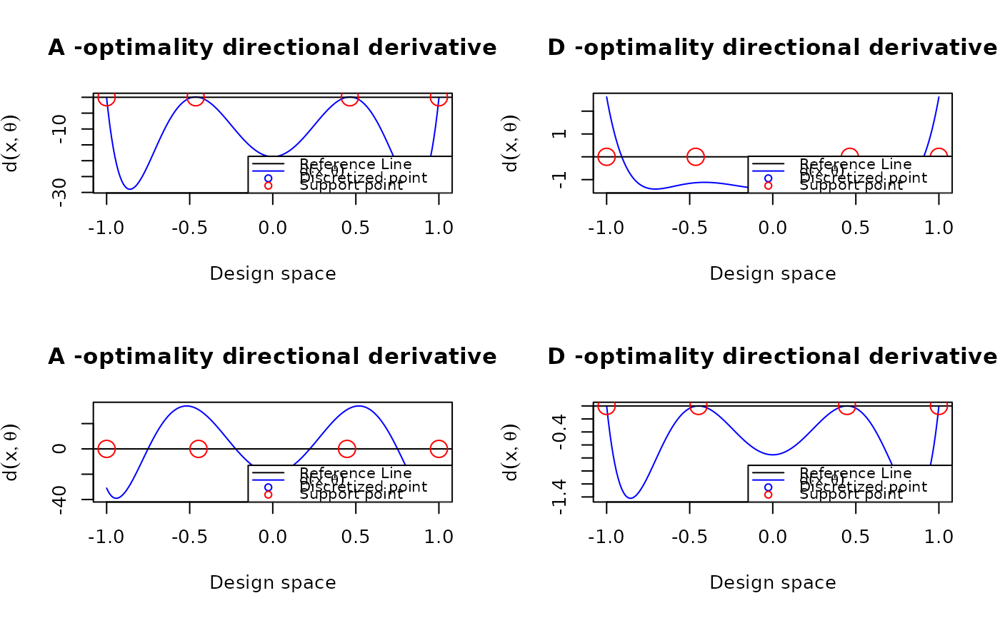

Verify the optimality condition for an optimal design (A-, c- or D-optimality)
Source:R/plot_dispersion.R
plot_dispersion.RdVerify the optimality condition for an optimal design (A-, c- or D-optimality)
Arguments
- u
The discretized design points
- design
The optimal design containing the design points and the associated weights
- tt
The level of skewness
- FUN
The function to calculate the derivative of the given model
- theta
The parameter value of the model
- criterion
The optimality criterion: one of "A", "c", or "D"
- cVec
c vector used to determine the combination of the parameters. This is only used in c-optimality
Details
This function visualizes the directional derivative under A-, c-, or D-optimality using the general equivalence theorem. For an optimal design, the directional derivative should not exceed the reference threshold
Examples
poly3 <- function(xi, theta){
matrix(c(1, xi, xi^2, xi^3), ncol = 1)
}
design_A <- data.frame(location = c(-1, -0.464, 0.464, 1),
weight = c(0.151, 0.349, 0.349, 0.151))
design_D = data.frame(location = c(-1, -0.447, 0.447, 1),
weight = rep(0.25, 4))
u <- seq(-1, 1, length.out = 201)
par(mfrow = c(2,2))
plot_dispersion(u, design_A, tt = 0, FUN = poly3, theta = rep(0, 4), criterion = "A")
plot_dispersion(u, design_A, tt = 0, FUN = poly3, theta = rep(0, 4), criterion = "D")
plot_dispersion(u, design_D, tt = 0, FUN = poly3, theta = rep(0, 4), criterion = "A")
plot_dispersion(u, design_D, tt = 0, FUN = poly3, theta = rep(0, 4), criterion = "D")
